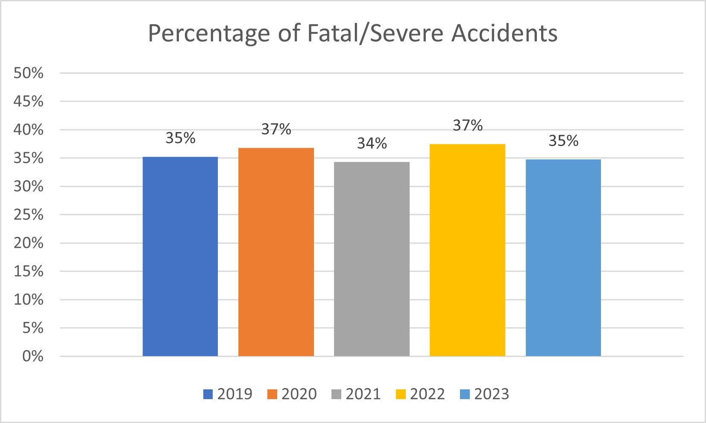

Machine Learning Enabled Data Analysis And Prediction of San Francisco Road Accident Severities Using KNN Algorithm For Effective Traffic Safety Planning
Abstract:
Traffic accidents are a daily occurrence across the world and the city of San Francisco is no exception. Many of these accidents result in severe injuries and even fatalities in many cases. There are social, financial, and emotional impacts to these accidents in addition to the strain on medical and police resources in the city. In spite of the best efforts of the city of San Francisco, the number of traffic accidents has been steadily on the rise with almost a third of these leading to severe injuries or fatalities. We need to make San Francisco streets safer.
The goal of this paper is to understand and analyze the traffic accident data for San Francisco for the last few years, and identify the leading factors which cause severe or fatal injuries. Additionally, the paper also focuses on creating and fine-tuning a prediction model which takes different values for these leading accident causing factors as input and predicts the severity of the accident. We hope that identification of these key factors will enable the city to determine what type of traffic safety resources to invest in, and the model prediction will help the city to identify when and where to deploy those resources for effective traffic safety planning.
The paper first conducts exploratory data analysis to establish trends, patterns, or outliers in the San Francisco accident data consisting of a very large number of features (>80). Then the paper attempts to identify which of these features are the most significant factors that cause severe injuries and even fatal accidents using the Chi-square methodology. These features were then used as inputs for a KNN classification model in order to predict the severity of potential collisions based on conditions. The paper also talks about the iterations of fine tuning the model.
The research results determined that features like intersection, pedestrian action, type of collision, party type, and vehicle type as some of the greatest contributing factors to collisions leading to severe injuries or fatalities. The final KNN model created as a part of this research achieved an accuracy of 0.92, a sensitivity of 0.87, a specificity of 0.95 and an F1 score of 0.89 indicating that the model is fairly accurate.
The causing factors clearly show that intersections and crosswalks are the locations which lead to the most number of severe accidents. We have also seen that not only drivers, but also pedestrians are at fault in these accidents. A serious effort should be made to make intersections and crosswalks safer for all parties. This can include more signage, brighter signage at night, possibly audible warnings so that everyone using intersections and crosswalks are extra careful. Additionally, more actions are required by the tire and car manufacturers for improving drivability under wet conditions. The model can help the city with optimal resource planning - determine when and where to invest in the right kind of resources.
1. Background
In 2014, San Francisco’s Vision Zero program was initiated with a mission to create safer streets and eliminate traffic deaths by 2024. However, the total number of street accidents is still high.
Due to the Covid lockdown, the number of accidents was reduced in 2020 compared to 2019, but since then, the number has been steadily rising over the past 3 years since the pandemic’s end.

Even more concerning, the percentage of collisions resulting in a fatality or severe injury has remained steady with no signs of decreasing and is at an average of 36% during the same five year period.
Although the San Francisco City Council has already taken several preventive measures such as dedicated walking and biking areas, more speed bumps, reduced speed limits, and wider intersection turning, the data shows that more actions are required for better traffic safety planning.
The goal of this paper is the following:
Exploratory data analysis and extract key insights.
Identify leading factors contributing to high severity accidents in San Francisco.
Leverage machine learning techniques to predict the severity of an accident given certain conditions.
The research conducted involved exploratory data analysis as well as training and testing a KNN model using a publicly available collision data set for San Francisco, downloaded from the SF City website. The research findings will help the city in making sound decisions when and where to invest funds for various safety programs and also better resource planning in the event of an accident. For example, the dataset indicates a higher probability of accidents during the afternoon and a majority of the accidents occurring at an intersection. The San Francisco Vision Zero initiative had a 10 year target of eliminating any accident fatalities by 2024 and exclusively targeted pedestrian safety to achieve this target. However, the grim reality, as per the data, is far from the target.
This fresh analysis could help the City identify where the real issues are and come up with alternative strategies for implementing better traffic safety and accident prevention.
The rest of the paper covers the following sections:
Methodology - describes the data set, data preparation methodology, feature selection methodology followed by modeling strategy.
Results and findings - outlines key data exploration observations, details of data cleaning exercise, results of feature selection process, findings from modeling exercise.
Conclusion and suggested recommendations - covers the conclusion and future implications of the findings.
Code and Data Availability - links to the code and dataset
Acknowledgements
2. Methodology
2.1 About the data:
This research project used a large publicly available collision dataset released by the SF City Government. The dataset contains 31995 observations across 86 features as shown below.
'data.frame': 31995 obs. of 86 variables:
$ X : int 30861 24117 44458 22911 30248 30726 91614 104245 95651 123048 ...
$ unique_id : int 248271 97475 97470 96463 96465 96459 96337 96334 96172 96173 ...
$ cnn_intrsctn_fkey : int 33348000 25934000 25934000 33287000 26434000 26434000 24189000 24189000 21135000 21135000 ...
$ cnn_sgmt_fkey : int 10256000 NA NA 2480201 6624000 6624000 10659000 10659000 3316000 3316000 ...
$ case_id_pkey : chr "190000275" "190000695" "190000695" "190001897" ...
$ tb_latitude : num 37.7 37.8 37.8 37.7 37.8 ...
$ tb_longitude : num -122 -122 -122 -122 -122 ...
$ geocode_source : chr "SFPD-INTERIM DB" "SFPD-INTERIM DB" "SFPD-INTERIM DB" "SFPD-INTERIM DB" ...
$ geocode_location : chr "CITY STREET" "CITY STREET" "CITY STREET" "CITY STREET" ...
$ collision_datetime : chr "1/1/19 1:51" "1/1/19 8:48" "1/1/19 8:48" "1/1/19 17:55" ...
$ collision_date : chr "1/1/19 00:00" "1/1/19 00:00" "1/1/19 00:00" "1/1/19 00:00" ...
$ collision_time : chr "01:51:00" "08:48:00" "08:48:00" "17:55:00" ...
$ accident_year : int 2019 2019 2019 2019 2019 2019 2019 2019 2019 2019 ...
$ month : chr "January" "January" "January" "January" ...
$ day_of_week : chr "Tuesday" "Tuesday" "Tuesday" "Tuesday" ...
$ time_cat : chr "10:01 pm to 2:00 am" "6:01 am to 10:00 am" "6:01 am to 10:00 am" "2:01 pm to 6:00 pm" ...
$ juris : chr "3801" "3801" "3801" "3801" ...
$ officer_id : chr "2238" "189" "189" "1345" ...
$ reporting_district : chr "Ingleside" "Northern" "Northern" "Mission" ...
$ beat_number : chr "3H15E" "2" "2" "4D" ...
$ primary_rd : chr "PARIS ST" "LAGUNA ST" "LAGUNA ST" "CESAR CHAVEZ ST" ...
$ secondary_rd : chr "ITALY AVE" "GROVE ST" "GROVE ST" "HAMPSHIRE ST" ...
$ distance : int 315 0 0 140 124 124 150 150 218 218 ...
$ direction : chr "North" "Not Stated" "Not Stated" "West" ...
$ weather_1 : chr "Clear" "Clear" "Clear" "Clear" ...
$ weather_2 : chr "Not Stated" "Not Stated" "Not Stated" "Not Stated" ...
$ collision_severity : chr "Injury (Complaint of Pain)" "Injury (Complaint of Pain)" "Injury (Complaint of Pain)" "Injury (Other Visible)" ...
$ type_of_collision : chr "Sideswipe" "Not Stated" "Not Stated" "Other" ...
$ mviw : chr "Parked Motor Vehicle" "Not Stated" "Not Stated" "Non-Collision" ...
$ ped_action : chr "No Pedestrian Involved" "No Pedestrian Involved" "No Pedestrian Involved" "No Pedestrian Involved" ...
$ road_surface : chr "Dry" "Dry" "Dry" "Dry" ...
$ road_cond_1 : chr "No Unusual Condition" "No Unusual Condition" "No Unusual Condition" "No Unusual Condition" ...
$ road_cond_2 : chr "Not Stated" "Not Stated" "Not Stated" "Not Stated" ...
$ lighting : chr "Dark - Street Lights" "Daylight" "Daylight" "Dark - Street Lights" ...
$ control_device : chr "Functioning" "None" "None" "None" ...
$ intersection : chr "Midblock > 20ft" "Intersection <= 20ft" "Intersection <= 20ft" "Midblock > 20ft" ...
$ vz_pcf_code : chr "22350" "22450(a)" "22450(a)" "22350" ...
$ vz_pcf_group : chr "22350" "22450(a)" "22450(a)" "22350" ...
$ vz_pcf_description : chr "Unsafe speed for prevailing conditions" "Failure to stop at STOP sign" "Failure to stop at STOP sign" "Unsafe speed for prevailing conditions" ...
$ vz_pcf_link : chr "http://leginfo.legislature.ca.gov/faces/codes_displaySection.xhtml?lawCode=VEH§ionNum=22350" "http://leginfo.legislature.ca.gov/faces/codes_displaySection.xhtml?lawCode=VEH§ionNum=22450" "http://leginfo.legislature.ca.gov/faces/codes_displaySection.xhtml?lawCode=VEH§ionNum=22450" "http://leginfo.legislature.ca.gov/faces/codes_displaySection.xhtml?lawCode=VEH§ionNum=22350" ...
$ number_killed : int 0 0 0 0 1 1 0 0 0 0 ...
$ number_injured : int 1 5 5 1 0 0 1 1 1 1 ...
$ street_view : chr "https://maps.google.com/maps?q=&layer=c&cbll=37.7184718773,-122.437400947" "https://maps.google.com/maps?q=&layer=c&cbll=37.7773881948,-122.426452239" "https://maps.google.com/maps?q=&layer=c&cbll=37.7773881948,-122.426452239" "https://maps.google.com/maps?q=&layer=c&cbll=37.7486637559,-122.407214417" ...
$ dph_col_grp : chr "AA" "AA" "AA" "AA" ...
$ dph_col_grp_description : chr "Vehicle(s) Only Involved" "Vehicle(s) Only Involved" "Vehicle(s) Only Involved" "Vehicle(s) Only Involved" ...
$ party_number_ckey : int 1 2 1 1 2 1 2 1 1 2 ...
$ party_type : chr "Driver" "Driver" "Driver" "Driver" ...
$ at_fault : chr "Yes" "No" "Yes" "Yes" ...
$ party_sex : chr "Male" "Female" "Female" "Male" ...
$ party_age : int 33 48 65 22 39 84 49 58 34 58 ...
$ party_sobriety : chr "Impairment Not Known" "Had Not Been Drinking" "Had Not Been Drinking" "Had Not Been Drinking" ...
$ party_drug_physical : chr "Not Stated" "Not Stated" "Not Stated" "Not Stated" ...
$ dir_of_travel : chr "South" "East" "South" "East" ...
$ party_safety_equip_1 : chr "Air Bag Deployed" "Air Bag Not Deployed" "Air Bag Deployed" "Not Required" ...
$ party_safety_equip_2 : chr "Lap/Shoulder Harness Used" "Lap Belt Used" "Lap Belt Used" "Not Required" ...
$ finan_respons : chr "Yes Proof of Insurance Obtained" "Yes Proof of Insurance Obtained" "Yes Proof of Insurance Obtained" "Not Stated" ...
$ sp_info_1 : chr "Not Stated" "Cell Phone Not In Use" "Cell Phone Not In Use" "Cell Phone Not In Use" ...
$ sp_info_2 : chr "Not Stated" "Not Stated" "Not Stated" "Not Stated" ...
$ sp_info_3 : chr "Not Stated" "Not Stated" "Not Stated" "Not Stated" ...
$ oaf_viol_cat : chr "Not Stated" "Not Stated" "Not Stated" "Not Stated" ...
$ oaf_viol_section : chr "" "Not Stated" "Not Stated" "Not Stated" ...
$ oaf_violation_code : chr "Vehicle" "Not Stated" "Not Stated" "Not Stated" ...
$ oaf_violation_suffix : chr "Not Stated" "Not Stated" "Not Stated" "Not Stated" ...
$ oaf_1 : chr "Violation" "None Apparent" "None Apparent" "None Apparent" ...
$ oaf_2 : chr "None Apparent" "Not Stated" "Not Stated" "Not Stated" ...
$ party_number_killed : int 0 0 0 0 0 1 0 0 0 0 ...
$ party_number_injured : int 1 1 4 1 0 0 0 1 0 1 ...
$ move_pre_acc : chr "Proceeding Straight" "Proceeding Straight" "Proceeding Straight" "Proceeding Straight" ...
$ vehicle_year : int 1999 2007 2005 2018 2016 NA 1997 NA 2010 1998 ...
$ vehicle_make : chr "TOYT/RAV4/WHITE" "MERZ/S550/SILVER" "TOYT/RAV4/SILVER" "GENEZE/RED" ...
$ stwd_vehicle_type : chr "Passenger Car" "Passenger Car" "Passenger Car" "Motor Driven Cycle/Scooter" ...
$ race : chr "Hispanic" "Other" "Asian" "Hispanic" ...
$ inattention : chr "Not Stated" "Not Stated" "Not Stated" "Not Stated" ...
$ special_info_f : chr "" "" "" "" ...
$ special_info_g : chr "" "" "" "" ...
$ street_of_travel : chr "PARIS STREET" "GROVE STREET" "LAGUNA STREET" "CESAR CHAVEZ STREET" ...
$ vehicle_autonomous : chr "Not applicable, conventional vehicle" "Not Stated" "Not Stated" "Not Stated" ...
$ point : chr "POINT (-122.437400947 37.718471877)" "POINT (-122.426452239 37.777388195)" "POINT (-122.426452239 37.777388195)" "POINT (-122.407214417 37.748663756)" ...
$ data_as_of : chr "1/28/19 00:00" "1/28/19 00:00" "1/28/19 00:00" "1/28/19 00:00" ...
$ data_updated_at : chr "4/26/23 00:00" "4/26/23 00:00" "4/26/23 00:00" "4/26/23 00:00" ...
$ data_loaded_at : chr "4/26/24 13:04" "4/26/24 13:04" "4/26/24 13:04" "4/26/24 13:04" ...
$ Neighborhoods : int 90 22 22 53 25 25 53 53 53 53 ...
$ SF.Find.Neighborhoods : int 90 22 22 53 25 25 53 53 53 53 ...
$ Current.Police.Districts : int 9 4 4 3 7 7 3 3 3 3 ...
$ Current.Supervisor.Districts: int 1 11 11 2 11 11 9 9 2 2 ...
$ Analysis.Neighborhoods : int 7 9 9 2 3 3 20 20 20 20 ...Out of the 86 features, 23 of them are just IDs or metadata that are not relevant to this study. The rest of the features include important data about the accident itself, such as time, location, number of people injured and killed, weather, road conditions, and lighting, as well as data about the individuals involved in the accident, like gender, age, race, vehicle type, and the person’s sobriety. It is important to note that the majority of these features are nominal, and only a few factors, like distance from intersection, number killed and injured, and age, are numerical values. The dataset is also not ready to be used immediately, as there are several NA values or values that don’t make sense, such as negative ages.
2.2 Data Pre-Processing:
Before using the dataset in any way, there must be a pre-processing cleansing of the data. The columns that are irrelevant, like the IDs, are filtered out. The observations containing NA or NaN values are removed, as well as outliers that didn’t make sense.
2.3 Feature Selection Techniques
Selecting relevant features is extremely important when training a machine learning model for optimal model efficiency and performance. Unless most important features are selected, we run the risk of dealing with too much or too little data. A model trained with too much data runs the risk of overfitting. It also becomes exponentially more costly and takes a longer time to train a model with a lot of data. Additionally, a lot of irrelevant features not only impact model complexity, but lead to model inaccuracies.
In the given SF collision dataset, since most of the features as well as the target variable are nominal, a chi-square test is used to compare every possible feature to the target variable.
A Chi-Square test compares the counts of each value in two categorical variables and compares the actual data to the expected values. It is used to determine if the difference between the two are statistically significant, which would indicate how strongly the variables are associated together.
While there are other methods of determining correlation or association, such as the R2 value or conducting an ANOVA test, these methods work with numerical values, which will simply not apply to the nominal variables in this dataset.
For each chi-square test for independence, the null hypothesis is H0: there is no association between the two variables, and the alternative hypothesis is Ha: there is an association between the two variables, at a .05 significance level. Therefore, a chi-square test resulting in a p-value less than 0.05 indicates that there is a statistically significant association between that feature and the target. All the features that do have an association will be selected to be used in the model.
2.4 Modeling Strategy
As one of the goals of this study is to predict the collision severity, a nominal target, a classification model is the most appropriate. To achieve this, a KNN (K-Nearest-Neighbor) classification model will be used. The KNN model is simple to use and understand and automatically forms classifications as well as predictions while also being quite accurate. The model forms predictions by finding the ‘k’ closest points to the point to be predicted, and classifies this new point as the most common classification of its nearest neighbors.
3. Results and Findings
3.1 Data Exploration and Key Findings
The chart breaks down the percentage of accidents by the time of the day. The majority of the accidents occur in the second half the day, between 2 PM - 10 PM. This could be due to rush hour afternoon traffic and bad visibility after dark, especially in winter conditions.
A large majority of accidents take place within 20 feet of an intersection, which indicates that authorities should pay special attention to these locations in order to make them safer for both drivers and pedestrians.
‘Broadside accidents (T-Bones)’ are by far the most common type of collision causing accidents, followed by accidents involving pedestrians, rear ends, and sideswipes. Broadside collisions are most likely to occur in intersections, which again proves that intersections are the most dangerous locations for accidents and need special attention.
Nearly a quarter of accidents involve a pedestrian, which is actually quite high, as a pedestrian could be severely injured or killed in a car accident.
The large amount of accidents between both vehicles and pedestrians at intersections calls for better crosswalk management and intersection management systems to reduce this number.
Although the majority of the accidents occur during the day, 1/3 of the accidents occur at night. This could be due to poor visibility and would require better signaling/signage at night.
Interestingly, a tenth of accidents take place in Wet conditions. While it is the driver’s responsibility to be safe, this number could possibly be reduced by tire and car manufacturers improving drivability in such conditions.
3.2 Data Processing Details
The dataset was modified to create two different datasets. One was used for the feature selection process and the other was used for the modeling process.
As the feature selection technique chosen was Chi-Square tests, the data needed to be categorical variables. Most of the variables were already categorical, and the few that were numerical (e.g. number injured or number killed) were related to the outcome of the model prediction and so deemed irrelevant for modeling. The data set was already decently formatted, and only a few columns contained NA values. While party_age was a numerical variable that wasn’t considered for the Chi-Square test, it would still eventually be used for the model. For the target variable, collision severity, the count of fatality was actually extremely low, in the 300s, as well as ‘Medical’ (a low injury level) having only 4 observations, compared to over 30,000 observations. There was simply not enough data to use for calculations. So, the values were grouped together by visible, severe injuries, and fatalities represented by 1, and only complaints of injuries by 0. This created a balance between the values and the data was ready to be used for Chi-Square testing.
The dataset used for the modeling was based off of this dataset. The features that were deemed to be insignificant by the feature selection process were omitted. Next, the categorical variables were converted to numerical. This process was done using one-hot encoding, in which each type value of each variable is turned into a new column, and 1 denotes that the observation is of that value, and 0 denotes that it is not. Additionally, two of the variables needed special attention. First was the at_fault column, which simply contained Yes or No values. It wouldn’t make sense to create a Yes and No column separately, so Yes was replaced with 1 and No was replaced with 0. The other variable requiring extra converting was vehicle_type. Since there were over 100 types of vehicles, it would cause unnecessary cluttering to create a new column for each type. Instead, 13 columns were created by grouping together similar vehicles by a keyword. After this, a simple function ‘dummy_cols’ was applied to the entire dataset. The function skips over numerical columns, so columns like collision_severity (already converted), distance from intersection, number of people killed and injured, and at_fault were left alone. The rest of the columns were automatically created by each value and assigned 1’s and 0’s.
The data was now converted fully to numerical values, but not yet ready for modeling. This was because variables such as party_age and distance from intersection were large integer values, not in terms of 0 to 1. All the columns were then scaled to a range of 0 to 1 using a created normalize() function.
# normalize <- function(x) {
# return ( (x - min(x)) / (max(x) - min(x)))
# }This made the data finally ready for modeling.
3.3 Feature Selection Results
As mentioned, the relevance of each feature was determined by conducting a chi-squared test using the feature and the collision severity.
The numerical features (distance, number killed and injured, and party_age) were not used as a chi-square test only deals with categorical variables.
The results of the tests, specifically chi-square statistic, degrees of freedom, and p-value were as follows:
do.call(rbind, CHIS_fatality) [, c(1,2,3)] statistic parameter p.value
month 43.85017 11 7.71898e-06
day_of_week 1.712738 6 0.9441336
time_cat 18.74903 5 0.002140347
weather_1 25.6388 5 0.0001048424
type_of_collision 979.9173 8 3.225899e-206
ped_action 559.613 7 1.205149e-116
road_surface 31.34577 2 1.560821e-07
road_cond_1 45.25208 7 1.221836e-07
lighting 1.38002 5 0.9264863
intersection 259.8934 2 3.671697e-57
party_type 1038.252 4 1.830144e-223
party_sex 67.6738 3 1.343547e-14
party_sobriety 250.9834 5 3.381593e-52
race 208.9993 5 3.370094e-43
stwd_vehicle_type 1552.739 23 1.267692e-314
inattention 1.876877 2 0.3912383
vehicle_autonomous 437.8992 2 8.154491e-96
at_fault 29.62137 1 5.25227e-08 3.4 Modeling Details
Once the data was prepared for modeling as explained in section 3.2, a machine learning model using a KNN algorithm was created with the goal of predicting the severity of any accident. The model was trained on the data, using the significant features mentioned previously. A 60-20-20 split ratio was used to create a training, validation, and testing dataset.
The model also requires a ‘k’ value, which is used to identify how many points each prediction will be compared with for the classification. This value is determined by taking the square root of the number of data points in the testing set. Since the value was even (134), 1 was added to make it odd, necessary for potential ties.
The model is then created and tested on the validation set using the knn() function from the FNN library.
The results and accuracy of the model is as shown below:
The output showed a 72% accuracy which is fairly high, but the sensitivity/recall showed a poor value of 0.24 and F1-score was 0.38, which is low, indicating that the model is not able to correctly identify high severity accidents.
3.5 Modeling Fine Tuning
As the model was very poor initially, steps needed to be taken to improve it.
First of all, the training set was very imbalanced. Specifically, the number of observations that were low severity was twice as many as high severity.
collision_severity n
1 0 9970
2 1 5488This imbalance potentially skewed the results heavily and could be the reason why the model predicted false negatives so often. To combat this, an upsampling method was used, which brought the distribution of non-severe to severe collisions to be much more even
collision_severity n
1 0 9970
2 1 8030Re-running the model using the balanced training set and the same validation set already showed greatly improved results.
While the accuracy remained similar, the number of false negatives decreased and true positives greatly increased, and the sensitivity, recall, and F1 score nearly doubled.
To further improve the model, the features party_age and distance were removed as predictors in the model. Party_age was removed because of its large spread, causing difficulties to associate it with a specific classification group. Distance (distance from intersection) was also removed, as the data was very widely spread and the information was already represented by the variable intersection in 3 simple categories. The removal of just these two features resulted in a significant improvement in accuracy to over 92%, and a sensitivity, specificity, precision, and F1 score of around 90%.
Confusion Matrix and Statistics
Reference
Prediction 0 1
0 3166 238
1 157 1591
Accuracy : 0.9233
95% CI : (0.9157, 0.9305)
No Information Rate : 0.645
P-Value [Acc > NIR] : < 2.2e-16
Kappa : 0.8309
Mcnemar's Test P-Value : 5.692e-05
Sensitivity : 0.8699
Specificity : 0.9528
Pos Pred Value : 0.9102
Neg Pred Value : 0.9301
Precision : 0.9102
Recall : 0.8699
F1 : 0.8896
Prevalence : 0.3550
Detection Rate : 0.3088
Detection Prevalence : 0.3393
Balanced Accuracy : 0.9113
'Positive' Class : 1
Finally the model is run using the testing set and the results are shown below.
Confusion Matrix and Statistics
Reference
Prediction 0 1
0 3189 272
1 134 1557
Accuracy : 0.9212
95% CI : (0.9135, 0.9284)
No Information Rate : 0.645
P-Value [Acc > NIR] : < 2.2e-16
Kappa : 0.825
Mcnemar's Test P-Value : 1.052e-11
Sensitivity : 0.8513
Specificity : 0.9597
Pos Pred Value : 0.9208
Neg Pred Value : 0.9214
Precision : 0.9208
Recall : 0.8513
F1 : 0.8847
Prevalence : 0.3550
Detection Rate : 0.3022
Detection Prevalence : 0.3282
Balanced Accuracy : 0.9055
'Positive' Class : 1
As the results indicate the model accuracy, sensitivity, specificity, F1 score are all fairly high. The model has been optimized.
4. Conclusion and suggested recommendations
We have seen from the San Francisco traffic accident data that post pandemic, the number of accidents in the city is steadily rising with over a third of these accidents leading to serious injuries or fatalities. I think we can all agree that even one death due to a traffic accident is one too many and all efforts should be made by the authorities as well as the people using the streets of San Francisco to ensure safer driving conditions for motorists, cyclists and pedestrians.
The causing factors clearly show that intersections and crosswalks are the locations which lead to the most number of severe accidents. We have also seen that not only drivers, but also pedestrians are at fault in these accidents. A serious effort should be made to make intersections and crosswalks safer for all parties. This can include more signage, brighter signage at night, possibly audible warnings so that everyone using intersections and crosswalks are extra careful. Additionally, more actions are required by the tire and car manufacturers for improving drivability under wet conditions. The model can help the city with optimal resource planning - determine when and where to invest in the right kind of resources.
5. Code and Data Availability
6. Acknowledgements
I would like to acknowledge the following individuals who helped make this research project possible:
Mentor Kaizheng Wang for his invaluable guidance and ideas.
Ms. Sarah Parker for teaching the data science skills and concepts needed.
Ms. Wanjiru Randolph for her help with the coding and debugging.
The Coding School for providing this research opportunity.